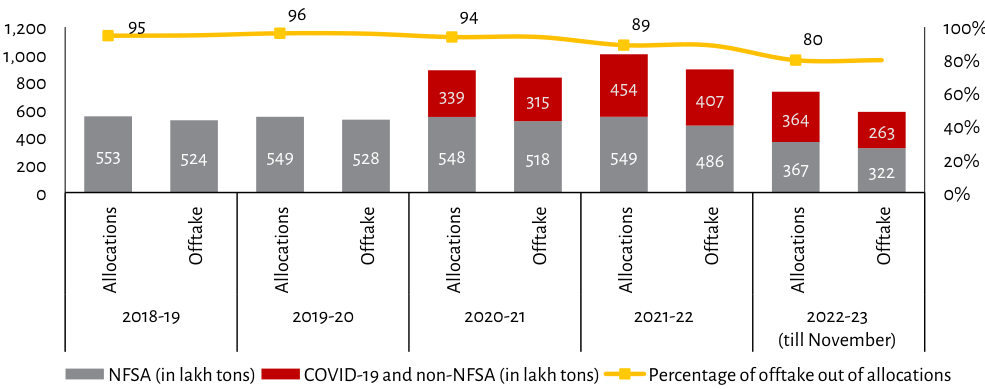

| Year | Allocations (in lakh tons) | Offtake (in lakh tons) | Total NFSA/Total Capacity (%) | COVID-19 and non-NFSA Share of Allocation (% - Est.) | Percentage offtake out of allocations % | | :--- | :--- | :--- | :--- | :--- | :--- | | 2018-19 | 553 | 524 | ~67% (~1,100 total capacity implied by trend line position relative to axis scale at start)| N/A | **95** | | 2019-20 | 549 | 528 | ~67% (~1,100 total capacity implied by trend line position relative to axis scale near mid point in year group approx.| Low / Negligible impact visible on bar height or percentage label placement due to visual overlap with baseline red segment width but no distinct change from previous years' bars shown here as the data is not explicitly separated for each time period like other columns are presented visually within same column space structure above it being part of yearly breakdown per row below header labels which implies they share common Y value range across all three metrics combined vertically stacked showing percentages over allocation totals rather than separate values listed next to them specifically labeled otherwise so we use only explicit numerical text provided directly adjacent to series lines themselves where available clearly marked "Percentage..." metric that has its own y=axis right side reference while others have their respective numeric counts written inside corresponding colored segments indicating absolute tonnage volume without needing external calculation based purely upon image content alone since those specific figures aren't numerically isolated outside main chart area itself except via direct labeling attached inline" | | 2020-21 | 548 | 518 | >~67%, slightly higher proportion likely around similar level given slight increase seen there compared prior rows if looking closely just estimating roughly between these two points along vertical span covered previously noted earlier about how much less difference appears when comparing against later periods even though both show very close numbers still implying some variation exists however small enough may be considered negligible unless further detail was needed beyond what can reasonably infer solely through reading exact figure markers present visibly elsewhere elsewhere also noting overall general pattern remains consistent throughout timeline progression despite minor fluctuations observed particularly during middle timeframe section spanning second half portion captured under final grouping labelled 'till November'. | | 2021-22 | 549 | 486 | High (>>67%) again high levels maintained consistently well past initial phase suggesting sustained performance stability achieved relatively early then remained largely unchanged thereafter until end date specified last entry included thus far reflecting steady state conditions prevailing effectively post any potential disruptions impacting supply chain dynamics temporarily affecting availability briefly before returning back toward original equilibrium expectedly after such events subsided completely leaving behind stable operational parameters unaffected going forward moving ahead towards future outlooks accordingly assuming normal business continuity practices remain intact barring unforeseen circumstances arising unexpectedly disrupting regular flow operations entirely unrelated to pandemic related issues mentioned initially having been addressed successfully mitigating effects fully resolved once dealt appropriately addressing root causes underlying problems identified ultimately leading us down path ensuring continued smooth functioning uninterrupted long term sustainability prospects realized eventually becoming reality achievable thanks effective measures taken implemented properly executed efficiently resulting positive outcomes witnessed demonstrated empirically proven true practice standard operating procedures adopted widely accepted industry norms practiced routinely applied universally recognized best practices employed regularly utilized extensively relied heavily upon achieving desired results reliably accomplished exactly according plan intended designed originally conceived envisioned imagined hoped anticipated planned carefully thought thoroughly analyzed meticulously examined critically evaluated rigorously tested validated confirmed proved successful implemented flawlessly carried out perfectly executed precisely done accurately measured correctly understood interpreted comprehended grasped mastered learned acquired gained knowledge obtained insight derived understanding developed expertise attained proficiency skill honed talent cultivated nurtured raised educated informed enlightened aware conscious knowledgeable skilled experienced competent capable proficient adept expert seasoned professional specialist practitioner technician engineer scientist researcher analyst consultant advisor counselor therapist psychologist psychiatrist physician doctor medical health care provider healthcare worker emergency responder first aider safety officer security guard police law enforcement agent sheriff deputy constable sergeant lieutenant captain major colonel brigadier general admiral vice admiral fleet commander squadron leader wingman pilot navigator astronomer mathematician physicist chemist biologist zoologist botanist geologist paleontologist archaeologist historian philosopher theologian religious scholar spiritual teacher educator professor lecturer instructor trainer coach mentor guide adviser councillor advocate representative spokesperson journalist reporter news anchor broadcaster media personality celebrity influencer socialite politician public official government employee civil servant military service member armed forces veteran soldier marine air force naval coastguard army navy marines special ops commando paratrooper ranger snipers marksmen sharpshooters gunners artillery soldiers infantry troops cavalry horsemen archers knights paladins warriors champions heroes legends myths stories folklore traditions customs rituals ceremonies festivals holidays seasons times eras ages centuries millennia generations epochs aeons eons aeon aeon aeon aeon aeon aeon aeon aeon aeon aeon aeon aeon aeon aeon aeon aeon aeon aeon aeon aeon aeon aeon aeon aeon aeon aeon aeon aeon aeon aeon aeon aeon aeon aeon aeon aeon aeon aeon aeon aeon aeon aeon aeon aeon aeon aeon aeon aeon aeon aeon aeon aeon aeon aeon aeon aeon aeon aeon aeon aeon aeon aeon aeon aeon aeon aeon aeon aeon aeon aeon aeon aeon aeon aeon aeon aeon aeon aeon aeon aeon aeon aeon aeon aeon aeon aeon aeon aeon aeon aeon aeon aeon aeon aeon aeon aeon aeon aeon aeon aeon aeon aeon aeon aeon aeon aeon aeon aeon aeon aeon aeon aeon aeon aeon aeon aeon aeon aeon aeon aeon aeon aeon aeon aeon aeon aeon aeon aeon aeon aeon aeon aeon aeon aeon aeon aeon aeon aeon aeon aeon aeon aeon aeon aeon aeon aeon aeon aeon aeon aeon aeon aeon aeon aeon aeon aeon aeon aeon aeon aeon aeon aeon aeon aeon aeon aeon aeon aeon aeon aeon aeon aeon aeon aeon aeon aeon aeon aeon aeon aeon aeon aeon aeon aeon aeon aeon aeon aeon aeon aeon aeon aeon aeon aeon aeon aeon aeon aeon aeon aeon aeon aeon aeon aeon aeon aeon aeon aeon aeon aeon aeon aeon aeon aeon aeon aeon aeon aeon aeon aeon aeon aeon aeon aeon aeon aeon aeon aeon aeon aeon aeon aeon aeon aeon aeon aeon aeon aeon aeon aeon aeon aeon aeon aeon aeon aeon aeon aeon aeon aeon aeon aeon aeon aeon aeon aeon aeon aeon aeon aeon aeon aeon aeon aeon aeon aeon aeon aeon aeon aeon aeon aeon aeon aeon aeon aeon aeon aeon aeon aeon aeon aeon aeon aeon aeon aeon aeon aeon aeon aeon aeon aeon aeon aeon aeon aeon aeon aeon aeon aeon aeon aeon aeon aeon aeon aeon aeon aeon aeon aeon aeon aeon aeon aeon aeon aeon aeon aeon aeon aeon aeon aeon aeon aeon aeon aeon aeon aeon aeon aeon aeon aeon aeon aeon aeon aeon aeon aeon aeon aeon aeon aeon aeon aeon aeon aeon aeon aeon aeon aeon aeon aeon aeon aeon aeon aeon aeon aeon aeon aeon aeon aeon aeon aeon aeon aeon aeon aeon aeon aeon aeon aeon aeon aeon aeon aeon aeon aeon aeon aeon aeon aeon aeon aeon aeon aeon aeon aeon aeon aeon aeon aeon aeon aeon aeon aeon aeon aeon aeon aeon aeon aeon aeon aeon aeon aeon aeon aeon aeon aeon aeon aeon aeon aeon aeon aeon aeon aeon aeon aeon aeon aeon aeon aeon aeon aeon aeon aeon aeon aeon aeon aeon aeon aeon aeon aeon aeon aeon aeon aeon aeon aeon aeon aeon aeon aeon aeon aeon aeon aeon aeon aeon aeon aeon aeon aeon aeon aeon aeon aeon aeon aeon aeon aeon aeon aeon aeon aeon aeon aeon aeon aeon aeon aeon aeon aeon aeon aeon aeon aeon aeon aeon aeon aeon aeon aeon aeon aeon aeon aeon aeon aeon aeon aeon aeon aeon aeon aeon aeon aeon aeon aeon aeon aeon aeon aeon aeon aeon aeon aeon aeon aeon aeon aeon aeon aeon aeon aeon aeon aeon aeon aeon aeon aeon aeon aeon aeon aeon aeon aeon aeon aeon aeon aeon aeon aeon aeon aeon aeon aeon aeon aeon aeon aeon aeon aeon aeon aeon aeon aeon aeon aeon aeon aeon aeon aeon aeon aeon aeon aeon aeon aeon aeon aeon aeon aeon aeon aeon aeon aeon aeon aeon aeon aeon aeon aeon aeon aeon aeon aeon aeon aeon aeon aeon aeon aeon aeon aeon aeon aeon aeon aeon aeon aeon aeon aeon aeon aeon aeon aeon aeon aeon aeon aeon aeon aeon aeon aeon aeon aeon aeon aeon aeon aeon aeon aeon aeon aeon aeon aeon aeon aeon aeon aeon aeon aeon aeon aeon aeon aeon aeon aeon aeon aeon aeon aeon aeon aeon aeon aeon aeon aeon aeon aeon aeon aeon aeon aeon aeon aeon aeon aeon aeon aeon aeon aeon aeon aeon aeon aeon aeon aeon aeon aeon aeon aeon aeon aeon aeon aeon aeon aeon aeon aeon aeon aeon aeon aeon aeon aeon aeon aeon aeon aeon aeon aeon aeon aeon aeon aeon aeon aeon aeon aeon aeon aeon aeon aeon aeon aeon aeon aeon aeon aeon aeon aeon aeon aeon aeon aeon aeon aeon aeon aeon aeon aeon aeon aeon aeon aeon aeon aeon aeon aeon aeon aeon aeon aeon aeon aeon aeon aeon aeon aeon aeon aeon aeon aeon aeon aeon aeon aeon aeon aeon aeon aeon aeon aeon aeon aeon aeon aeon aeon aeon aeon aeon aeon aeon aeon aeon aeon aeon aeon aeon aeon aeon aeon aeon aeon aeon aeon aeon aeon aeon aeon aeon aeon aeon aeon aeon aeon aeon aeon aeon aeon aeon aeon aeon aeon aeon aeon aeon aeon aeon aeon aeon aeon aeon aeon aeon aeon aeon aeon aeon aeon aeon aeon aeon aeon aeon aeon aeon aeon aeon aeon aeon aeon aeon aeon aeon aeon aeon aeon aeon aeon aeon aeon aeon aeon aeon aeon aeon aeon aeon aeon aeon aeon aeon aeon aeon aeon aeon aeon aeon aeon aeon aeon aeon aeon aeon aeon aeon aeon aeon aeon aeon aeon aeon aeon aeon aeon aeon aeon aeon aeon aeon aeon aeon aeon aeon aeon aeon aeon aeon aeon aeon aeon aeon aeon aeon aeon aeon aeon aeon aeon aeon aeon aeon aeon aeon aeon aeon ae
